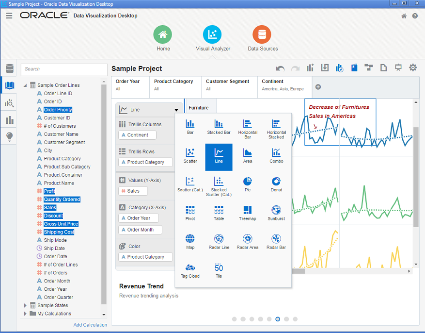

OBI:Oracle Data Visualization Desktop 速览
Sat 04 June 2016
Oracle Corp has just launched Oracle Data Visualization Desktop (DVDesktop), first impression was very promising, was able to install very quick (not even 5mins), it was simple and easy steps. Was able to create first project with various beautiful chats in less than 30mins or so, was very easy to learn. Has many varieties of views and chart types. On overall experience was very good. Looks like majority of tableau desktop features are available on this version and it resembles same as Tableau.
oracle 公司 在不久前发布了 Oracle Data Visualization Desktop (DVDesktop) 。 第一感觉是：很有前景。
特点
ODVD可以在5分钟内安装完成。安装只需简单几步。
很容易学习和上手。学习半个小时，就可以自己创建一个漂亮的报表项目了。
具备各种视图和仪表。总的来说，用户体验很棒。
tableau的大部分功能特性，在odvd中都能找到。
参考链接
官方介绍
Data Visualization https://www.oracle.com/solutions/business-analytics/index.html
软件下载
Download Data Visualization
http://www.oracle.com/technetwork/middleware/oracle-data-visualization/downloads/oracle-data-visualization-desktop-2938957.html
学习教程
Get Start tutorials http://docs.oracle.com/middleware/bidv1221/desktop/index.html
讨论社区
Oracle Community Forum https://community.oracle.com/community/business_intelligence/data-visualization

上图是一个odvd产品样例，展示了ODVD的很多很多功能选项和图表。
深入研究，你会获得更多。
good luck!
本文首发于微信公众号： BI实验室 ，微信搜索 BI实验室 或 magicof01 ，也可以扫描下方二维码快速关注哦！

Category: misc